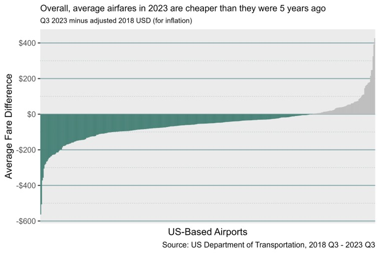
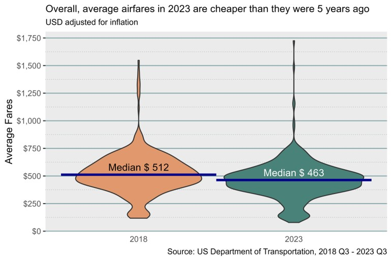
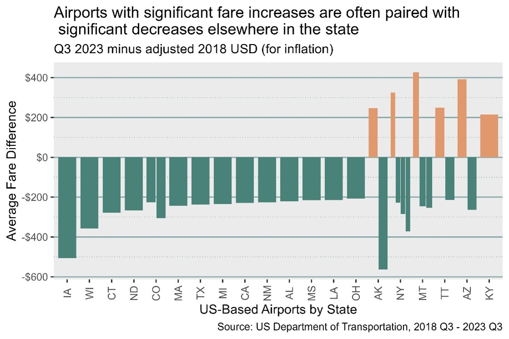
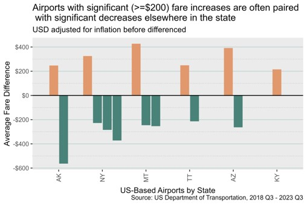

An independent project toward the end of graduate school, the primary objective was to introduce
social network analysis and how to visualize it. Peer review yielded feedback on visuals for a round
of improvements. With "
Music Maps
" project reflections in mind,
I took this opportunity to experiment with interactive visuals.
Introduction
About 2.9M passengers fly in and out of US airports daily (Federal Aviation Administration, 2023).
To manage such a feat, airports must manage carefully timed schedules, monitor several variables
(plane maintenance, weather, and air traffic to name a few), and rapidly determine alternative plans
due to poor planning and/or luck. COVID-19 was a particularly difficult time for the flight industry,
considering travel bans and extended fear of social gatherings.
We review whether the flight industry has “bounced back” to pre-COVID performance by comparing
2018 and 2023 average fare data. A network analysis supports investigation of the driving cause(s)
of fare changes. Marketing carriers glean insights into other carriers’ strategies.
Two data sources were analyzed while two others supported visualization:
- Data for analysis, via the Bureau of Transportation Statistics:
-
Marketing Carrier On-Time Performance
- US-based passenger flight data provided by US certified air carriers. These carriers account for
at least 1% of domestic scheduled passenger revenues.
-
Airline Origin & Destination Survey of DB1B Coupons
- Summarization of the 10% sample of fares paid, excluding fees (i.e. baggage fees)
paid after initial ticket purchase.
- Data for visualization:
-
Geography Division (2024)
- TIGER/Line® shape files to plot US states
- Google Maps and Wikipedia for city and/or airport coordinates
Each month of source 1 contained between 600k and 702k flight records, necessitating a
more targeted analysis. Source 2 was used to do so by exploring the most drastic changes
in average fares per airport over time.
Source 2 was formatted into quarters. Quarter 3 of 2018 and 2023 were chosen
to sandwich COVID-19 inside the latest available data. Quarter 3 runs from July 1
through September 30. Ultimately, carrier-airport conclusions were confined
to September to hasten results from visualization algorithms.
Exploratory data analysis revealed that, in the sample data overall, each airport's average
fares in 2023 were cheaper than they were 5 years ago (even after adjusting for inflation):
Original visual
Peer feedback reflected non-traditional barplot use and desire for summarizational numerics...

Updated visual
...so I used a violin plot to emphasize the "drooping" average fare distribution

Most airports with significant average fare increases (>= $200) were balanced by significant airport
fare reductions in another part of the state:
Original visual
Peer feedback indicated unclear state-fare pairings and incomplete state list...

Updated visual
...so I refocused my message and added space between the bars.

No geographical patterns regarding significant change airports were found, although a "slanted sandwich"
pattern appears state-wise (see below.) Passengers should avoid Utah if possible, while Iowa, Colorado,
Louisiana, Mississippi, and Alabama offer great discounts:
Interact with me! Point for details; click and drag to move across the map; scroll to zoom.
A budding theory comes to mind when we see Colorado; budget airline Frontier is headquartered there. Are
budget airlines shaking things up at each of the signficant fare change airports? The following interactive
sankey diagram allows the user to compare marketing carrier distributions for each of those airports: